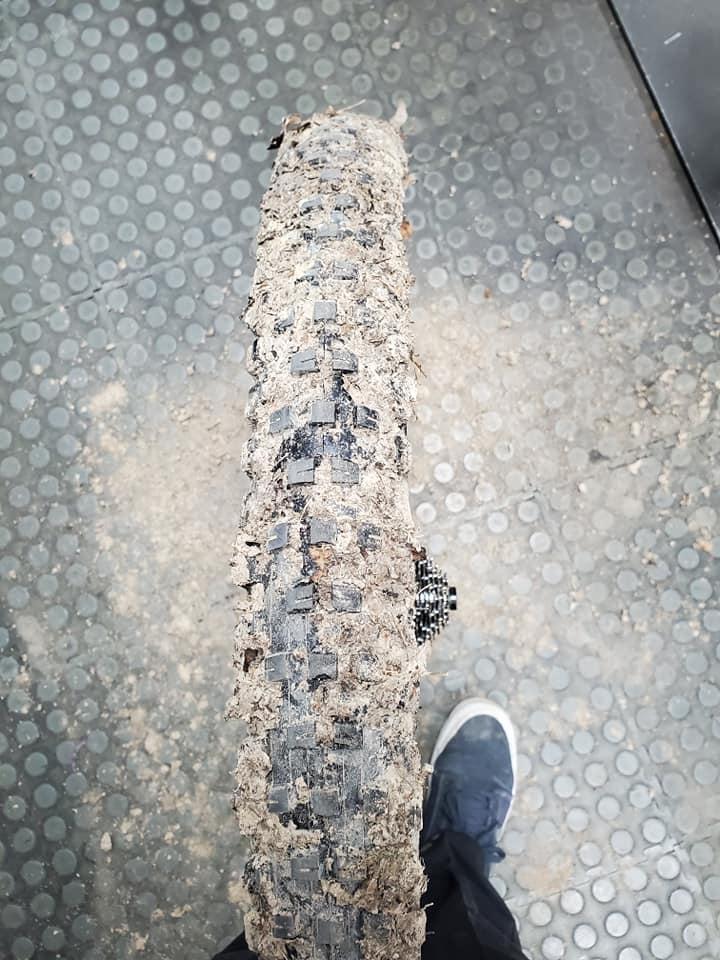

Freeze/Thaw Checker for Trails
👍🥾🚵♂️
The current weather conditions show that you are safe from freeze/thaw in {{
this.weatherData?.location.name }}. Enjoy!

😬😬😬
Use caution! While the temperature and precipitation are right, you may
experience freeze/thaw in {{ this.weatherData?.location.name }} due to low cloud cover.
👎🚫👎🚫👎🚫👎🚫
Stay off the trails! Don't be that guy!
There is a high risk of freeze/thaw in {{this.weatherData?.location.name }}.
Weather Details:
Outside Temperature: {{ this.weatherData?.current.temperature }}°F
Current Cloud Cover: {{ this.weatherData?.current.cloudcover }}%
Current Precipitation: {{ this.weatherData?.current.precip }}
Forecast: {{this.weatherData?.current.weather_descriptions}}
Why was this created?
This tool is meant to help us respect freeze/thaw season. If we fail to do so we risk ruining the off-road trails we so dearly love. If you have any doubts whatsoever about freeze/thaw, consult this tool before heading to the trail.
More information on freeze/thaw.
How does this tool work?
Trails are considered Good if they meet all of the below conditions.
- Current outside temperature that is < 25°F degrees. This is important to ensure the soil is firm.
- Current cloud cover that is > 50%. This is important to ensure the sun does not warm up the soil.
- Current precipitation = 0. Gotta keep it dry!